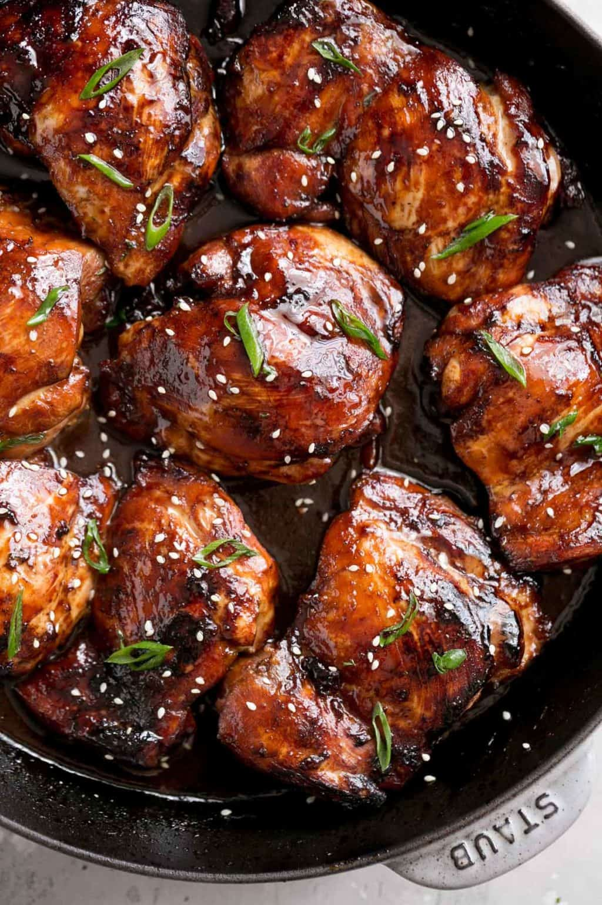

Delicious Honey Soy Chicken Thighs

Baked or fried, recipe down below!!
Ingredients
- 1/3 cup honey
- 1/4 cup low sodium soy sauce
- 1/4 cup finely chopped green onions
- 2 tablespoons cooking oil vegetable oil or canola oil
- 1 1/2 tablespoons garlic minced (or 4 large cloves garlic, minced)
- 1 tablespoon white vinegar (apple cider or rice wine vinegar -- OPTIONAL)
- 1 teaspoon sesame oil OPTIONAL
- 3/4 teaspoon fresh minced ginger
- 2 1/2 pounds (1.2 kg) chicken thighs (skinless, boneless)
- Salt and pepper to season
- Fresh chopped parsley to garnish
Directions
- In a shallow bowl, combine honey, soy sauce, green onions, cooking oil, garlic, vinegar, sesame oil and ginger. Mix well and set aside.
- Pat chicken dry with paper towel. Trim off any excess fat. Season with salt and pepper then transfer chicken to the bowl with the marinade. Cover and marinade chicken for at least 30 minutes if time allows (or overnight).
- Preheat the oven to 425°F (220°C).
- Transfer chicken along with the marinade to a cast iron skillet or baking dish. Bake for 20-25 minutes, flipping twice while baking to ensure the chicken doesn't dry out on top.
- Broil for 5 minutes at high heat until golden browned and slightly charred on the edges. Chicken should have an internal temp of 165°F (or 70°C).
- Garnish with parsley and optional sesame seeds.
- Serve chicken with pan juices over steamed rice, cauliflower rice, zucchini noodles, regular noodles or mashed potatoes.